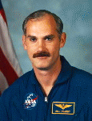

Lyndon B. Johnson Space Center
Houston, Texas 77058
|
National Aeronautics and Space Administration Lyndon B. Johnson Space Center Houston, Texas 77058 |
 |
Biographical Data |
||
William F. Readdy
NASA Astronaut (Former)
PERSONAL DATA: Born January 24, 1952, in Quonset Point, Rhode Island, but considers McLean, Virginia, to be his hometown. Married to Colleen Nevius. They have two sons and a daughter. He enjoys sailing, racquet sports, flying, and reading.
EDUCATION: Graduated from McLean High School, McLean, Virginia, in 1970; bachelor of science degree in aerospace engineering (with honors) from the U.S. Naval Academy in 1974. Distinguished graduate, U.S. Naval Test Pilot School 1980.
ORGANIZATIONS: Fellow, Society of Experimental Test Pilots. Member, Association of Space Explorers, International Academy of Astronautics, U.S. Naval Institute, American Institute of Aeronautics and Astronautics, Naval Order of the United States. Board member, National Aeronautic Association.
SPECIAL HONORS: Recipient of the Legion of Merit, the Distinguished Flying Cross, two NASA Distinguished Service Medals, three NASA Outstanding Leadership Medals, two NASA Exceptional Service Medals, three NASA Space Flight Medals, the Meritorious Service Medal, the Navy Commendation Medal, Navy Achievement Medal, Navy Expeditionary medal, two National Defense Service Medals, the Armed Forces Expeditionary Medal, Armed Forces Reserve Medal, and various unit and service awards. U.S. Naval Test Pilot School Instructor of the Year (1984). NASA Space Flight Safety Award. Federation Aeronautique Internationale awards include: the Kamarov Diploma (STS-51), the De La Vaulx Medal (STS-79) and a World Record Certificate (STS-79).
EXPERIENCE: Readdy graduated from Annapolis in 1974, and earned his wings as a naval aviator. Following fleet training in the A-6 “Intruder” at NAS Oceana, Virginia, he joined Attack Squadron Eighty-five aboard the USS Forrestal deployed to the North Atlantic and Mediterranean from 1976 until 1980. Upon completion of the Naval Test Pilot School, he served as project test pilot on a variety of programs at Strike Aircraft Test Directorate. Following a tour as a test pilot instructor, he reported in 1984 to the USS Coral Sea, on Caribbean and Mediterranean deployments. In 1986 Readdy transferred into the Naval Reserve to join NASA and served as an instructor pilot and unit commander until his naval retirement in August 2000. He has logged 7,000 flying hours in over 60 types of fixed wing and helicopters and over 550 carrier landings.
NASA EXPERIENCE: Readdy joined NASA's Johnson Space Center in October 1986 as a research pilot at Ellington Field, Houston, Texas, where he served as program manager for the highly-modified Boeing 747 Shuttle Carrier Aircraft. He was selected as an astronaut in the 1987 Group. He served in numerous support roles including: Training Officer; Safety Officer; Operations Development Branch Chief; NASA Director of Operations, Star City, Russia; Stafford Task Force; and the first manager of Space Shuttle Program Development charged with upgrading the Space Shuttle. He served at NASA Headquarters as Associate Administrator, Space Operations Mission Directorate with oversight for the Kennedy, Johnson, Marshall and Stennis Space Centers as well as programmatic oversight for International Space Station, Space Shuttle, Space Communications and Space Launch Vehicles. Readdy recently chaired the Space Flight Leadership Council charged with oversight of NASA’s successful Space Shuttle Return to Flight STS-114 mission. Readdy retired from NASA in October 2005 and formed Discovery Partners International, an aerospace consulting firm, located in Arlington, Virginia, where he serves as managing partner. (More information is available at http://www.discovery-partners.com).
SPACE FLIGHT EXPERIENCE: Readdy is a veteran pilot astronaut with three space flights, STS-42 (January 22-30, 1992), STS-51 (September 12-22, 1993) and STS-79 (September 16-26, 1996). Readdy has logged over 672 hours in space.
JANUARY 2006